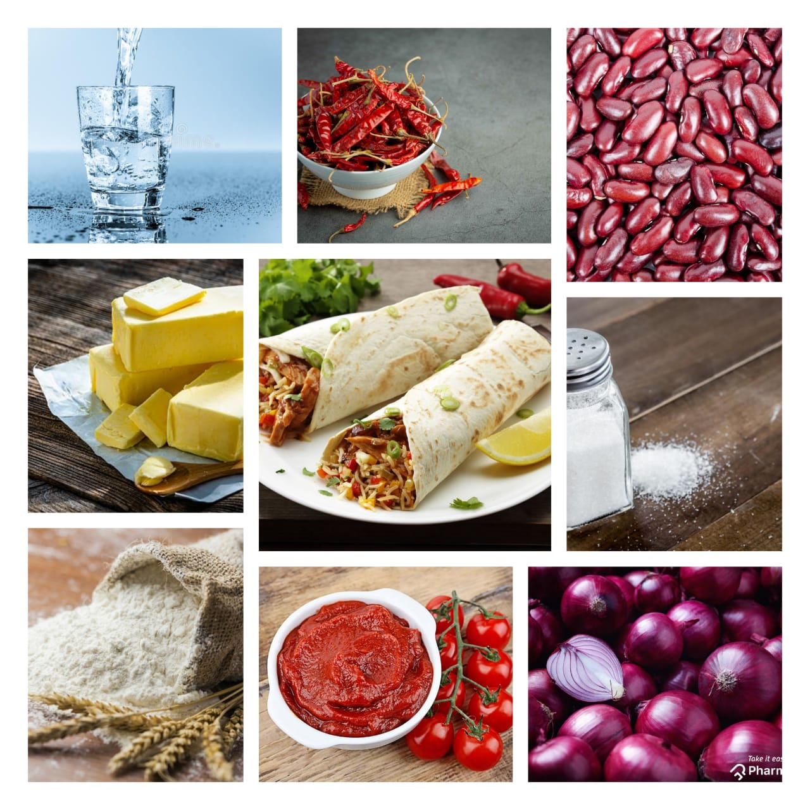

chicken burritos
Home
A super-filling meal stuffed with various filling like seasoned rice, tangy mexican salsa, grilled fajitas, sauteed spicy chicken, sour cream, cucumber and cheese. The perfect dish that you can make it for any celebration or just simply treat your family members with a wonderful mexican meal this sunday.Burrito is a super-filling snack stuffed with various veg and non-veg options along with plenty of cheese and sour cream.Chicken Burrito is made with an amazing combination of salsa, some taco seasoning and shredded chicken. The burrito can be wrapped up with lot of salads to go along. Usually the burrito is wrapped by using tortilla but you can also make whole wheat tortillas at home for a much healthier option.
Ingredients
1 1/2 cups maize flour
1/2 cup Maida
3 tsp Oil
1/2 tsp Salt
Water
3 cups Rajma
3 Onions
8-9 tbsp Tomato Ketchup
1 1/2 cups Tomato Puree
3 tbsp Butter
3 tbsp Ghee
1 kg Tomatoes
6 Red Chillies (dry)
2 tsp Oil,3 tsp Sugar,
1/2 tsp Ajwain
1/2 cup Sour cream
1 cup Cheese
1/2 cup Spring onions,Jalapenos

Nutrition Facts
Calories 547
Total Fat 21.97g
Cholesterol 51mg
Sodium 981mg
Total Carbohydrate 58.12g
Vitamin C 4.5mcg
Vitamin A 0mcg
Procedure
Mix all the ingredients together and make a soft dough with some water.
Roll out into thin rounds the size of a chapati and cook on a tawa without any oil.Keep aside.
Soak the beans overnight, boil, drain and mash them.
Heat ghee and butter together and saute the onions till transparent. Add the beans and mix well. Stir in the puree, ketchup and salt. Cook till the colour darkens, mashing the mixture as it cooks.Keep aside.
Soak the chillies in half a cup of water.Saute the onions and add the tomatoes and chillies. Add water if required. Cook till the tomatoes are done, cool and blend it.
Heat the sauce, add ajwain, sugar and salt. Cook for another 10 minutes and keep aside.
In a chapati spread some rajma, hot sauce and sour cream. Sprinkle the onions, jalapenos and cheese.Wrap it and serve immediately.
Expert Guide
Back ←
Scroll to Top ↑